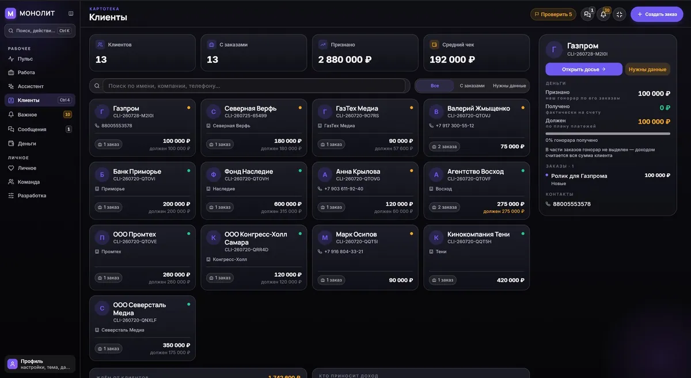

Разработка приложения под задачу: Android и Windows из одного кода MONOLITH
Приложение для видеографов: клиенты, деньги, проекты и ИИ-ассистент — в одном месте, без чужих CRM. Android и Windows.
Задача
Видеограф живёт между съёмками, монтажом и перепиской. Учёт клиентов — в заметках, деньги — в голове, дедлайны — в страхе. Чужие CRM сделаны для отделов продаж: тяжёлые, дорогие и не про съёмку.
Нужен был инструмент, который ведёт клиентов, проекты и кассу так, как думает видеограф, — и помещается в телефон.
Отдельная боль — деньги на транзитных заказах. Когда через вас проходит бюджет клиента, из которого вы платите площадке, технике и людям, «получено» и «заработано» — разные суммы. Любая таблица, которая складывает их в одну колонку, врёт, а понимаешь это на разговоре с налоговой.
Решение
Собрал приложение на Flutter: одна кодовая база — Android и Windows. Внутри — база клиентов и заказов, финансы с отчётами, командная работа и ИИ-ассистент, который отвечает на вопросы о делах и помогает с рутиной.
Данные живут локально и не утекают на чужие серверы. Обновления прилетают через телеграм-бота, сайт приложения — на GitHub Pages.
Как проверяю, что приложение выдержит
Это самая полезная часть кейса, потому что на ней ошибаются чаще всего. Приложение, которое летает на тестовых данных, в реальной работе встаёт колом — и виноват обычно не телефон, а запрос к базе внутри цикла.
Живой пример из этого проекта. Сводный экран считал расходы по каждому заказу отдельным запросом. На шестнадцати заказах это незаметно, и ни один из семисот тестов не покраснел. На стенде из 1216 заказов тот же код дал очередь запросов к единственному соединению с базой: экран открывался 202 секунды, кнопки не нажимались, приложение выглядело зависшим.
Починка заняла меньше времени, чем поиск: выборка «по одной записи на элемент списка» заменена одним запросом с группировкой в памяти. Но найти это можно было только на объёме и только прибором, который считает запросы к базе при открытии экрана. Такой прибор в приложении есть, и он остаётся в нём насовсем.
Вывод, который переношу в любой заказ: стенд с тремя записями не проверяет ничего. Нагрузочные данные заводятся до того, как экран считается готовым.
Сколько это стоит для пользователя
Ядро приложения — заказы, клиенты, деньги и налоги, команда и часы, ассистент, облачная копия и синхронизация — бесплатно, без подписки и без срока. Не пробный период: модель поменялась осознанно, потому что подписка продавала экран, а не пользу.
Деньги берут отдельные модули под конкретные задачи. Первый — ШТАБ, лента заказов с hh.ru, бирж и телеграм-чатов: 5 000 ₽ в год. Один пойманный съёмочный день окупает год доступа с запасом.
Референс модели — Obsidian и Raycast: ядро бесплатно навсегда, платными идут надстройки, которые нужны не всем.
Результат
Живой продукт в ежедневной работе: расписание, касса и клиенты — в одном окне на телефоне и ПК. Что внутри и как работает ШТАБ — лента заказов с рынка — на странице ШТАБ: заказы приходят сами и в подробном разборе; сайт продукта — monolithapp.github.io.
Такое же приложение под вашу задачу — от 150 000 ₽ за MVP. Под MVP я понимаю рабочий продукт, которым можно пользоваться каждый день, а не кликабельный макет.
Вопросы
Почему Flutter, а не отдельные приложения под каждую систему?
Одна кодовая база означает, что правка логики выходит сразу на телефоне и на компьютере. Два отдельных приложения — это две команды, две очереди правок и расхождение поведения через полгода. Там, где платформы отличаются по существу, расходятся только экраны.
Что входит в MVP за 150 000 ₽?
Рабочий продукт под одну задачу: интерфейс, логика, база, сборка под Android и Windows, доставка обновлений. Не прототип и не макет. Точный состав считается после разбора задачи — приложение с оплатой внутри и приложение со списком заявок стоят по-разному.
Где будут лежать данные?
По умолчанию на устройстве пользователя. Облако подключается, если нужна синхронизация между людьми или устройствами, и тогда это отдельное решение с отдельной ответственностью. Вариант «всё в чужом облаке по умолчанию» я не предлагаю.
Сколько времени занимает такая разработка?
Зависит от объёма, и честный ответ даётся после разбора задачи, а не до. МОНОЛИТ я пишу три года, но это продукт, который растёт постоянно, а не заказ с границами. Приложение под конкретную задачу — это месяцы, а не годы.
Можно доработать приложение, которое уже есть?
Можно, если есть доступ к исходному коду. Без него доработка невозможна ни для кого — это первое, что стоит проверить в договоре с прежним подрядчиком.


